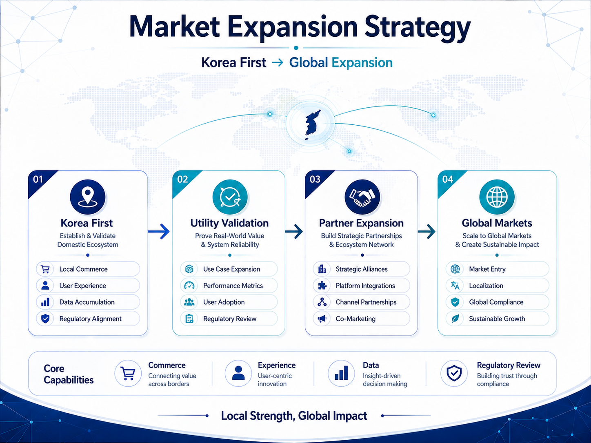

EO Shopping Mall — Commerce Layer
PUBLIC RELEASEEO Shopping Mall
| STATUS 준비·확장 (PLANNED) · 사업 및 서비스 구조 구체화 단계 |
EO Shopping Mall은 EO Token의 핵심 Commerce Utility를 구현하기 위한 커머스 플랫폼입니다. 초기에는 EO Global이 직접 상품을 기획·조달·판매하는 직접판매 모델을 중심으로 운영하고, 운영 경험과 사용자 기반이 확대되면 외부 브랜드와 판매자가 참여하는 Marketplace로 확장합니다.
Product Strategy
초기: 통일TV·EO 자체 굿즈, 콘텐츠 연계 상품, 일반 소비재, 제휴 브랜드 상품
확장: 합법적으로 조달 가능한 한반도 전통식품·문화상품 및 지역 스토리 상품
장기 조건부: 관련 법령·대북제재·통관·검역·원산지 규정을 충족하는 범위에서 북한 관련 상품 검토
Payment Principle
하나의 주문은 100% EO Token 결제 또는 100% 법정화폐 결제 중 하나의 방식으로만 결제합니다. EO Token과 법정화폐를 하나의 주문에서 혼합하여 결제하는 방식은 지원하지 않습니다.
EO 결제를 선택한 경우 상품대금과 배송비, 국내에서 결제 시점에 확정 가능한 세금을 포함한 주문 총액을 EO Token으로 환산합니다. 해외 세금·관세·통관비는 국가·상품별 정책에 따라 다르게 적용할 수 있습니다.
Commerce Expansion Model

도표 4. Korea First → Global Expansion 전략
Direct Sales → Marketplace
| 단계 | 운영방식 | EO 적용 |
|---|---|---|
| 초기 | EO Global 직접판매 중심 | 대부분의 일반 상품에 EO 전액결제 지원, 일부 제외 가능 |
| 확장 | 직접판매 + 외부 판매자 입점 | 판매자가 EO 결제 지원 여부 선택 |
| 정산 | EO 결제 참여 판매자 | EO 정산 또는 법정화폐 정산 선택 가능, 세부 Marketplace 정책 별도 |
EO Payment Pricing
EO 결제가격은 지정된 기준 거래소의 시장가격을 참조
기준 거래소는 유동성·가격 안정성·서비스 적합성을 고려하여 지정·변경 가능
구체적인 가격 산정 방식과 견적 유효시간은 Service Terms 및 EO Technical Paper에서 별도 정의
시장 급변, 거래소 장애, 가격 데이터 오류 등 이상 상황에서는 EO 결제 기능을 선택적으로 제한할 수 있음
Refund Principle
일반 상품의 EO 환불은 원칙적으로 사용자가 실제 결제한 EO 수량을 기준으로 처리합니다. 세부 환불 가능기간, 환불대기 자산 관리 및 정산 절차는 EO Shopping Mall의 Service Terms와 운영정책에서 별도로 정의합니다.